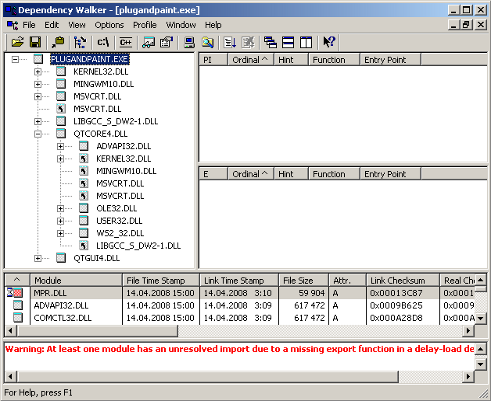

Qt for Windows - Deployment
This documentation describes deployment process for Windows. We refer to the plug & paint example application through out the document to demonstrate the deployment process.
The Windows Deployment Tool
The Windows deployment tool windeployqt is designed to automate the process of creating a deployable folder containing the Qt-related dependencies (libraries, QML imports, plugins, and translations) required to run the application from that folder. It creates a sandbox for Universal Windows Platform (UWP) or an installation tree for Windows desktop applications, which can be easily bundled into an installation package.
The tool can be found in QTDIR/bin/windeployqt. It needs to be run within the build environment in order to function correctly. When using Qt Installer, the script QTDIR/bin/qtenv2.bat should be used to set it up.
windeployqt takes an .exe file or a directory that contains an .exe file as an argument, and scans the executable for dependencies. If a directory is passed with the --qmldir argument, windeployqt uses the qmlimportscanner tool to scan QML files inside the directory for QML import dependencies. Identified dependencies are then copied to the executable's directory. The hardcoded local paths in Qt5Core.dll are furthermore replaced with relative ones.
For Windows desktop applications, the required runtime files for the compiler are also copied to the deployable folder by default (unless the option --no-compiler-runtime is specified). In the case of release builds using Microsoft Visual C++, these consist of the Visual C++ Redistributable Packages, which are intended for recursive installation by the application's installer on the target machine. Otherwise, the shared libraries of the compiler runtime are used.
The application may require additional 3rd-party libraries (for example, database libraries), which are not taken into account by windeployqt.
Additional arguments are described in the tools' help output:
Usage: windeployqt [options] [files]
Qt Deploy Tool 5.12.2
The simplest way to use windeployqt is to add the bin directory of your Qt
installation (e.g. <QT_DIR\bin>) to the PATH variable and then run:
windeployqt <path-to-app-binary>
If ICU, ANGLE, etc. are not in the bin directory, they need to be in the PATH
variable. If your application uses Qt Quick, run:
windeployqt --qmldir <path-to-app-qml-files> <path-to-app-binary>
Options:
-?, -h, --help Displays this help.
-v, --version Displays version information.
--dir <directory> Use directory instead of binary directory.
--libdir <path> Copy libraries to path.
--plugindir <path> Copy plugins to path.
--debug Assume debug binaries.
--release Assume release binaries.
--pdb Deploy .pdb files (MSVC).
--force Force updating files.
--dry-run Simulation mode. Behave normally, but do not
copy/update any files.
--no-patchqt Do not patch the Qt5Core library.
--no-plugins Skip plugin deployment.
--no-libraries Skip library deployment.
--qmldir <directory> Scan for QML-imports starting from directory.
--qmlimport <directory> Add the given path to the QML module search locations.
--no-quick-import Skip deployment of Qt Quick imports.
--no-translations Skip deployment of translations.
--no-system-d3d-compiler Skip deployment of the system D3D compiler.
--compiler-runtime Deploy compiler runtime (Desktop only).
--no-compiler-runtime Do not deploy compiler runtime (Desktop only).
--webkit2 Deployment of WebKit2 (web process).
--no-webkit2 Skip deployment of WebKit2.
--json Print to stdout in JSON format.
--angle Force deployment of ANGLE.
--no-angle Disable deployment of ANGLE.
--no-opengl-sw Do not deploy the software rasterizer library.
--list <option> Print only the names of the files copied.
Available options:
source: absolute path of the source files
target: absolute path of the target files
relative: paths of the target files, relative
to the target directory
mapping: outputs the source and the relative
target, suitable for use within an
Appx mapping file
--verbose <level> Verbose level (0-2).
Qt libraries can be added by passing their name (-xml) or removed by passing
the name prepended by --no- (--no-xml). Available libraries:
bluetooth concurrent core declarative designer designercomponents enginio
gamepad gui qthelp multimedia multimediawidgets multimediaquick network nfc
opengl positioning printsupport qml qmltooling quick quickparticles quickwidgets
script scripttools sensors serialport sql svg test webkit webkitwidgets
websockets widgets winextras xml xmlpatterns webenginecore webengine
webenginewidgets 3dcore 3drenderer 3dquick 3dquickrenderer 3dinput 3danimation
3dextras geoservices webchannel texttospeech serialbus webview
Arguments:
[files] Binaries or directory containing the binary.
Static Linking
To build static applications, build Qt statically by configuring Qt with -static:
cd C:\path\to\Qt configure -static <any other options you need>
If you later need to reconfigure and rebuild Qt from the same location, ensure that all traces of the previous configuration are removed by entering the build directory and running nmake distclean or mingw32-make distclean before running configure again.
Linking the Application to the Static Version of Qt
As an example, this section will build the Plug & Paint example statically.
Once Qt finishes building, build the Plug & Paint application. First we must go into the directory that contains the application:
cd examples\tools\plugandpaint
Run qmake to create a new makefile for the application, and perform a clean build to create the statically linked executable:
nmake clean
qmake -config release
nmake
You probably want to link against the release libraries, and you can specify this when invoking qmake. Now, provided that everything compiled and linked without any errors, we should have a plugandpaint.exe file that is ready for deployment. To check that the application has the required libraries, copy the executable to a machine that does not have Qt or any Qt applications installed, and run it on that machine.
Remember that if your application depends on compiler specific libraries, these must still be redistributed along with your application. You can check which libraries your application is linking against by using the depends tool. For more information, read the Application Dependencies section.
Since we cannot deploy plugins using the static linking approach, the application we have prepared is incomplete. It will run, but the functionality will be disabled due to the missing plugins. To deploy plugin-based applications we should use the shared library approach.
Shared Libraries
We have two challenges when deploying the Plug & Paint application using the shared libraries approach: The Qt runtime has to be correctly redistributed along with the application executable, and the plugins have to be installed in the correct location on the target system so that the application can find them.
Building Qt as a Shared Library
For this example, we assume that Qt is installed as a shared library, which is the default when installing Qt, in the C:\path\to\Qt directory.
Linking the Application to Qt as a Shared Library
After ensuring that Qt is built as a shared library, we can build the Plug & Paint application. First, we must go into the directory that contains the application:
cd examples\tools\plugandpaint
Now run qmake to create a new makefile for the application, and do a clean build to create the dynamically linked executable:
nmake clean
qmake -config release
nmake
This builds the core application, the following will build the plugins:
cd ..\plugandpaint/plugins nmake clean qmake -config release nmake
If everything compiled and linked without any errors, we will get a plugandpaint.exe executable and the pnp_basictools.dll and pnp_extrafilters.dll plugin files.
Creating the Application Package
To deploy the application, we must make sure that we copy the relevant Qt DLLs (corresponding to the Qt modules used in the application) and the Windows platform plugin, qwindows.dll, as well as the executable to the same directory tree in the release subdirectory.
In contrast to user plugins, Qt plugins must be put into subdirectories matching the plugin type. The correct location for the platform plugin is a subdirectory named platforms. Qt Plugins section has additional information about plugins and how Qt searches for them.
If dynamic OpenGL is used, you additionally need to include the libraries required for ANGLE and software rendering. For ANGLE, both libEGL.dll and libGLESv2.dll from Qt's lib directory are required as well as the HLSL compiler from DirectX. The HLSL compiler library, d3dcompiler_XX.dll, where XX is the version number that ANGLE (libGLESv2) was linked against.
If Qt was configured to link against ICU or OpenSSL, the respective DLL's need to be added to the release folder, too.
Note: Qt WebEngine applications have additional requirements that are listed in Deploying Qt WebEngine Applications.
Remember that if your application depends on compiler specific libraries, these must be redistributed along with your application. You can check which libraries your application is linking against by using the depends tool. For more information, see the Application Dependencies section.
We'll cover the plugins shortly, but first we'll check that the application will work in a deployed environment: Either copy the executable and the Qt DLLs to a machine that doesn't have Qt or any Qt applications installed, or if you want to test on the build machine, ensure that the machine doesn't have Qt in its environment.
If the application starts without any problems, then we have successfully made a dynamically linked version of the Plug & Paint application. But the application's functionality will still be missing since we have not yet deployed the associated plugins.
Plugins work differently to normal DLLs, so we can't just copy them into the same directory as our application's executable as we did with the Qt DLLs. When looking for plugins, the application searches in a plugins subdirectory inside the directory of the application executable.
So to make the plugins available to our application, we have to create the plugins subdirectory and copy over the relevant DLLs:
plugins\pnp_basictools.dll plugins\pnp_extrafilters.dll
An archive distributing all the Qt DLLs and application specific plugins required to run the Plug & Paint application, would have to include the following files:
| Component | File Name | |
|---|---|---|
| The executable | plugandpaint.exe | |
| The Basic Tools plugin | plugins\pnp_basictools.dll | |
| The ExtraFilters plugin | plugins\pnp_extrafilters.dll | |
| The Qt Windows platform plugin | platforms\qwindows.dll | |
| The Qt Windows Vista style plugin | styles\qwindowsvistastyle.dll | |
| The Qt Core module | Qt5Core.dll | |
| The Qt GUI module | Qt5Gui.dll | |
| The Qt Widgets module | Qt5Widgets.dll | |
Other plugins might be required depending on the features the application uses (iconengines, imageformats).
In addition, the archive must contain the following compiler specific libraries (assuming Visual Studio 14.0 (2015) or 15.0 (2017)):
| Component | File Name | |
|---|---|---|
| The C run-time | vccorlib140.dll, vcruntime140.dll | |
| The C++ run-time | msvcp140.dll | |
If dynamic OpenGL was used, then the archive must additionally contain:
| Component | File Name | |
|---|---|---|
| ANGLE libraries | libEGL.dll, libGLESv2.dll | |
| HLSL compiler library for ANGLE | d3dcompiler_XX.dll | |
| OpenGL Software renderer library | opengl32sw.dll | |
Finally, if Qt was configured to use ICU, the archive must contain:
| File Name | ||
|---|---|---|
| icudtXX.dll | icuinXX.dll | icuucXX.dll |
To verify that the application now can be successfully deployed, you can extract this archive on a machine without Qt and without any compiler installed, and try to run it.
An alternative to putting the plugins in the plugins subdirectory is to add a custom search path when you start your application using QCoreApplication::addLibraryPath() or QCoreApplication::setLibraryPaths().
QCoreApplication::addLibraryPath("C:/some/other/path");
One benefit of using plugins is that they can easily be made available to a whole family of applications.
It's often most convenient to add the path in the application's main() function, right after the QApplication object is created. Once the path is added, the application will search it for plugins, in addition to looking in the plugins subdirectory in the application's own directory. Any number of additional paths can be added.
Manifest files
When deploying an application compiled with Visual Studio, there are some additional steps to be taken.
First, we need to copy the manifest file created when linking the application. This manifest file contains information about the application's dependencies on side-by-side assemblies, such as the runtime libraries.
The manifest file needs to be copied into the same folder as the application executable. You do not need to copy the manifest files for shared libraries (DLLs), since they are not used.
If the shared library has dependencies that are different from the application using it, the manifest file needs to be embedded into the DLL binary. Since Qt 4.1.3, the following CONFIG options are available for embedding manifests:
embed_manifest_dll embed_manifest_exe
Both options are enabled by default. To remove embed_manifest_exe, add
CONFIG -= embed_manifest_exe
to your .pro file.
You can find more information about manifest files and side-by-side assemblies at the MSDN website.
The correct way to include the runtime libraries with your application is to ensure that they are installed on the end-user's system.
To install the runtime libraries on the end-user's system, you need to include the appropriate Visual C++ Redistributable Package (VCRedist) executable with your application and ensure that it is executed when the user installs your application.
They are named vcredist_x64.exe (IA64 and 64-bit) or vcredist_x86.exe (32-bit) and can be found in the folder c{Visual Studio install path>/VC/redist/<language-code>}.
Alternatively, they can be downloaded from the web, for example vcredist_x64.exe for Visual Studio 2015.
Note: The application you ship must be compiled with exactly the same compiler version against the same C runtime version. This prevents deploying errors caused by different versions of the C runtime libraries.
Application Dependencies
Additional Libraries
Depending on configuration, compiler specific libraries must be redistributed along with your application.
For example, if Qt is built using ANGLE, its shared libraries and the HLSL compiler from DirectX to be shipped as well.
You can check which libraries your application is linking against by using the Dependency Walker tool. All you need to do is to run it like this:
depends <application executable>
This will provide a list of the libraries that your application depends on and other information.

When looking at the release build of the Plug & Paint executable (plugandpaint.exe) with the depends tool, the tool lists the following immediate dependencies to non-system libraries:
| Qt | VC++ 14.0 (2015) | MinGW |
|---|---|---|
|
|
When looking at the plugin DLLs the exact same dependencies are listed.
From Qt version 5.2 onwards, the officially supported version for OpenSSL is 1.0.0 or later. Versions >= 0.9.7 and < 1.0.0 might work, but are not guaranteed to.
Qt Plugins
All Qt GUI applications require a plugin that implements the Qt Platform Abstraction (QPA) layer in Qt 5. For Windows, the name of the platform plugin is qwindows.dll. This file must be located within a specific subdirectory (by default, platforms) under your distribution directory. Alternatively, it is possible to adjust the search path Qt uses to find its plugins, as described below.
Your application may also depend on one or more Qt plugins, such as the print support plugin, the JPEG image format plugin or a SQL driver plugin. Be sure to distribute any Qt plugins that you need with your application. Similar to the platform plugin, each type of plugin must be located within a specific subdirectory (such as printsupport, imageformats or sqldrivers) within your distribution directory.
The search path for Qt plugins is hard-coded into the QtCore library. By default, the plugins subdirectory of the Qt installation is the first plugin search path. However, pre-determined paths like the default one have certain disadvantages. For example, they may not exist on the target machine. For that reason, you need to examine various alternatives to make sure that the Qt plugins are found:
- Using
qt.conf. This approach is the recommended if you have executables in different places sharing the same plugins. - Using QApplication::addLibraryPath() or QApplication::setLibraryPaths(). This approach is recommended if you only have one executable that will use the plugin.
- Using a third party installation utility to change the hard-coded paths in the QtCore library.
If you add a custom path using QApplication::addLibraryPath it could look like this:
QCoreApplication::addLibraryPath("C:/customPath/plugins");
Then QCoreApplication::libraryPaths() would return something like this:
C:/customPath/pluginsC:/Qt/%VERSION%/pluginsE:/myApplication/directory
The executable will look for the plugins in these directories and the same order as the QStringList returned by QCoreApplication::libraryPaths(). The newly added path is prepended to the QCoreApplication::libraryPaths() which means that it will be searched through first. However, if you use QCoreApplication::setLibraryPaths(), you will be able to determine which paths and in which order they will be searched.
The How to Create Qt Plugins document outlines the issues you need to pay attention to when building and deploying plugins for Qt applications.